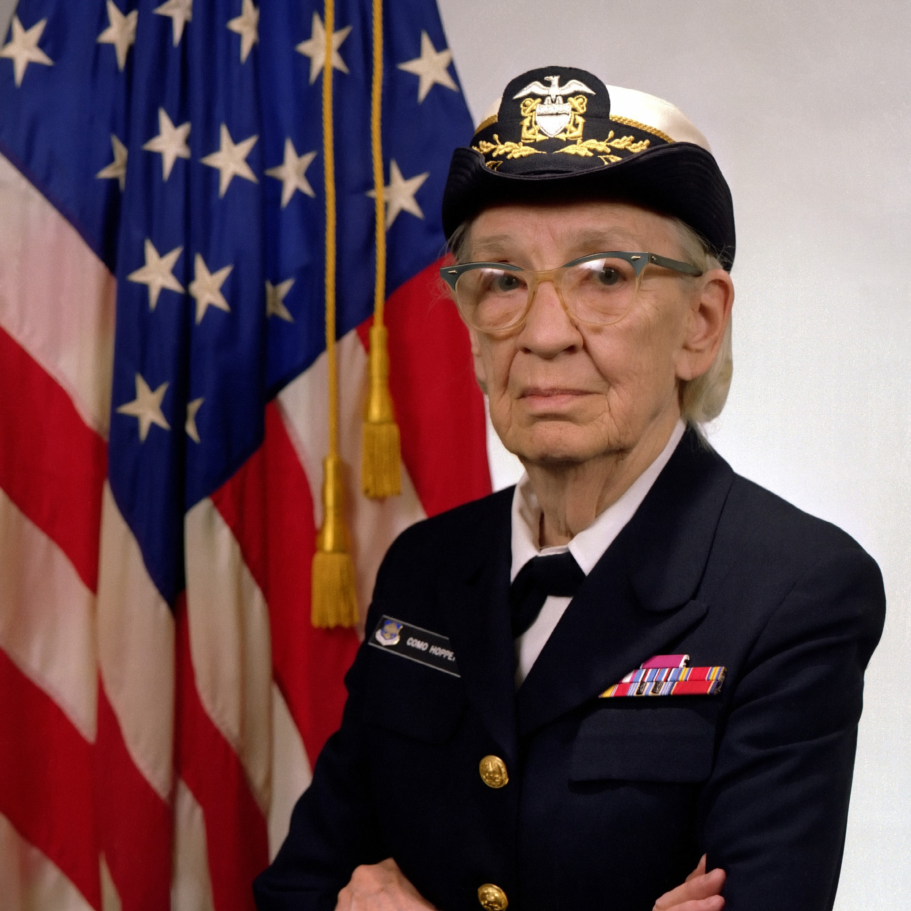
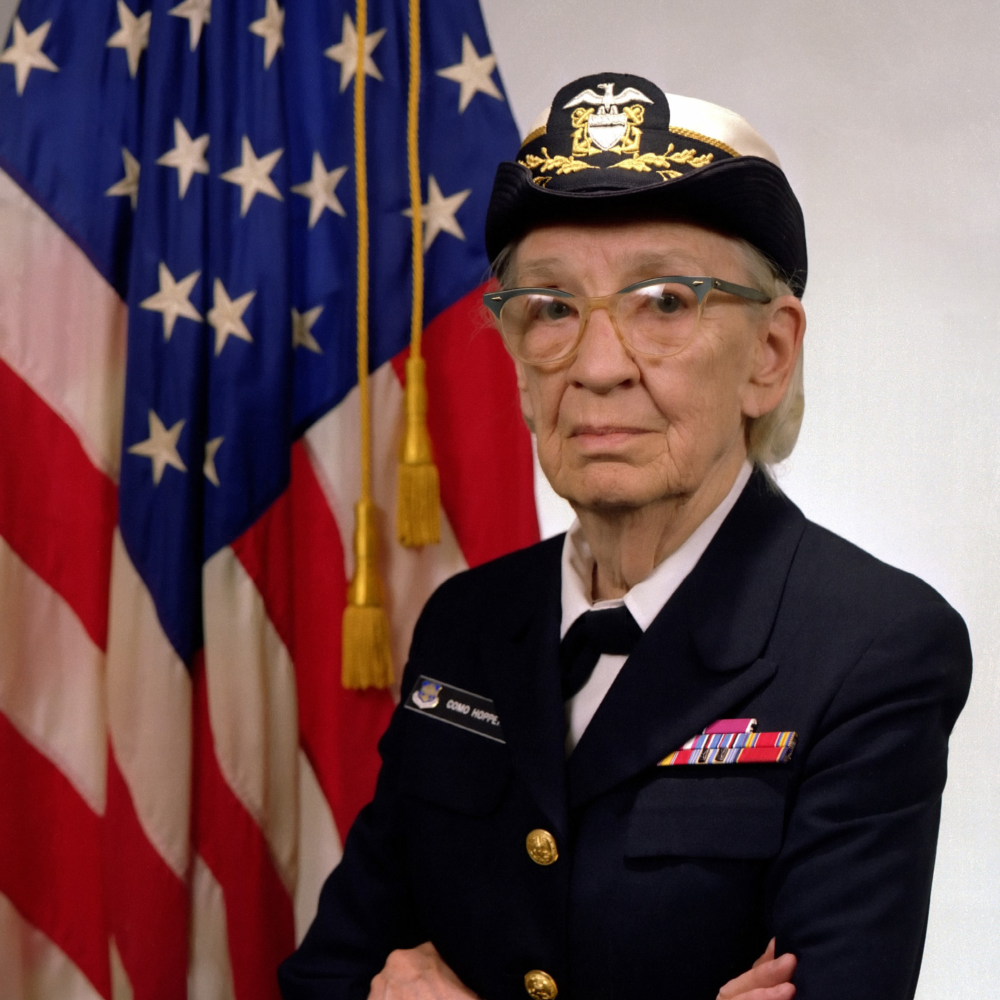

Grace Hopper é conhecida por seu pioneirismo em diversas áreas, ela foi a primeira mulher a se formar na famosa Yale University (EUA), com um PhD em matemática, além de ter sido a primeira almirante da marinha americana. No campo da computação, Grace foi responsável por ser uma das criadoras do COBOL, a linguagem de programação para bancos de dados comerciais, além do COBOL, Hopper também criou linguagens de programação para o UNIVAC, o primeiro computador comercial fabricado nos Estados Unidos. Seu feito mais lembrado, entretando, refere-se à popularização do termo "bug", que tem por sentido, indicar problemas em um software. Conhecia como uma dentre as mulheres que lutam por representatividade na indústria da tecnologia, Grace Hopper é lembrada no meio feminista pela frase: “é mais fácil pedir perdão do que permissão”.